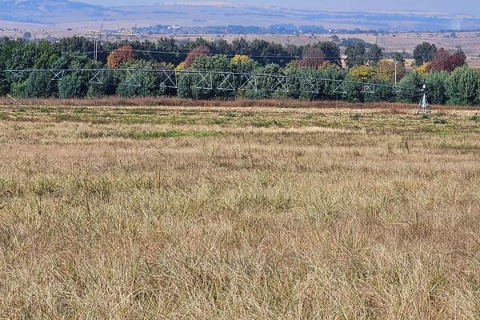

Learn More About Us

Discover the story behind KBK FARMS and our commitment to sustainable agriculture.
Brief History of KBK FARMS
Founded in 1984 in Disaneng, a village in Mafikeng, North West. Established by two brothers and two sisters. Started as a small backyard poultry operation. Has grown to include cattle, goats, sheep, and crop farming. Operates its own abattoir for in-house meat processing. Also sells farm equipment (e.g., tractors) and builds poultry houses and fencing.
Mission and Vision Statements
Mission Statement
To provide the Mafikeng community with high quality livestock, poultry, and crop produce, alongside reliable meat processing, equipment, and construction services, rooted in family values.
Vision Statement
To be the leading, most trusted family owned agricultural business in North West province, known for quality, integrity, and community empowerment.